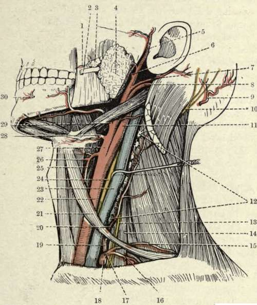

The Sterno-Mastoid
Description
This section is from the book "Surgical Anatomy", by John A. C. MacEwen. Also available from Amazon: Surgical Anatomy.
The Sterno-Mastoid
The Sterno-Mastoid region is that which is covered by the muscle of that name. The muscle presents a small fossa- the fossa supraclaviculars minor-between its two heads and just above the sterno-clavicular articulation, the base of which corresponds on the right side with the bifurcation of the innominate, and on the left is in front of the common carotid, while the internal jugular vein lies a little external. Thus these important structures are in danger in subcutaneous tenotomy of the sternal head. The external jugular vein crosses the muscle superficially from above, downwards and backwards, in a line drawn from the angle of the jaw to the middle of the clavicle, while the anterior jugular vein generally runs along the anterior border of the muscle. On its deep surface the spinal accessory nerve passes obliquely down and backwards, and enters the muscle, which it supplies, about 1½ inches below the mastoid process, at the junction of its anterior and middle thirds. On leaving the muscle, it enters the posterior triangle of the neck midway between the occiput and clavicle, to end in the deep surface of the trapezius.
The posterior border of the sterno-mastoid nearly corresponds with that of the scalenus anticus, the guide to the subclavian artery.
The apex of the lung rises well into the neck, extending generally 1½ inches above the clavicle, under cover of the clavicular portion of the sterno-mastoid, sterno-thyroid, and part of the scalenus anticus, and first part of the subclavian vessels.
The posterior triangle of the neck is the space bounded by the sterno-mastoid in front, the trapezius behind, and the middle third of the clavicle below. The surface of the triangle is depressed above the clavicle forming the supraclavicular fossa, which is traversed by the subclavian vessels and cords of the brachial plexus. The subclavian artery, lying on the first rib, may be felt in this depression, close to the border of the sterno-mastoid, and may be compressed against the rib by pressure applied downwards and inwards. The posterior belly of the omo-hyoid can be felt, and sometimes seen, as a thin cord just above, and running parallel to, the clavicle. In the upper part of the fossa the transverse process of the seventh cervical vertebra may be felt on deep pressure.
The posterior region of the neck is bounded on either side by the anterior edge of the trapezius, and presents two lateral masses, formed by the trapezius and complexus muscles on either side, separated by a slight central depression, under which lies the ligamentum nucha, extending from the occipital protuberance to the spine of the vertebra prominens (seventh cervical). The spine of the axis may be felt on deep pressure at the upper end of the central depression.
The skin of the neck is smooth, and freely movable in front, and particularly so in the submaxillary region, where advantage is taken of this in performing certain plastic operations about the mouth, while the same property favours cicatricial contraction and deformity. The platysma myoides is quite subcutaneous, and by its connections causes turning in of the edges of wounds made across the line of its fibres, which run upwards and forwards. Sometimes the accumulation of subcutaneous fat in this region may be great, and give rise to a pendulous fold known as a ' double chin.' At the back of the neck the skin is thicker and more adherent, contains numerous sebaceous glands, is generally exposed to friction, and is a favourite seat of boils and carbuncles. As the subcutaneous tissues are dense, and the blood-supply not very abundant, these affections are frequently painful, and sloughing is not uncommon.
The cervical facia consists of three principal layers : (i) A superficial investing layer, which, attached to the ligamentum nuchae behind, runs round the neck, splitting as it does sp to enclose the trapezius and sterno-mastoid muscles, to join its neighbour of the opposite side in front, where it has an attachment to the hyoid bone. Above, following it from behind, it is attached to the superior curved line of the occiput, mastoid process, and cartilage of the external auditory meatus ; then it splits to enclose the parotid gland, (parotid capsule-the anterior layer being attached to the zygoma and the posterior to the styloid process and angle of the jaw, forming the stylo-maxillary ligament), and finally is attached to the margin of the lower jaw. Below it is attached to the clavicle and manubrium sterni, the fascia splitting close to its insertion into the latter to enclose the sternal head of the sterno-mastoid, some lymphoid tissue, and the anterior jugular vein. The anterior layer is attached to the front of the manubrium and the posterior to the back of the bone, and it is this compartment which is opened into in dividing the sternal head of the sterno-mastoid. This superficial layer supplies a capsule to the submaxillary gland.
Deep Dissection of the Left Side of the Neck (Buchanan, after Spalteholz.)
1. | Transverse facial artery. | 16. | Suprascapular artery. |
2. | Stensen's duct. | 17· | Thyroid axis. |
3· | Socia parotidis. | 18. | Subclavian artery (first part |
4· | Parotid gland. | 19. | Inferior thyroid artery. |
5· | Superficial temporal artery. | 20. | Ascending cervical artery. |
6. | Internal maxillary artery. | 21. | Anterior belly of omo-hyoid. |
7· | Posterior auricular artery. | 22. | Common carotid artery. |
8. | Occipital artery. | 23· | Internal jugular vein. |
9· | Occipital artery. | 24. | Pneumogastric nerve. |
ΙΟ. | Great occipital nerve. | 25· | Superior thyroid artery. |
II. | Internal carotid artery. | 26. | Superior laryngeal artery. |
12. | Deep cervical glands. | 27. | External carotid artery. |
13. | Phrenic nerve. | 28. | Lingual artery. |
14. | Scalenus anticus muscle. | 29. | Facial artery. |
15. | Transverse cervical artery. | 3°. | Mental artery. |
(2) A pretracheal layer lies immediately under the superficial layer in front, and invests the anterior group of muscles (sterno-hyoid, etc.). It also furnishes a capsule for the thyroid gland, helping to connect it with the cricoid cartilage, and laterally forms the anterior portion of the carotid sheath. Above, it is attached to the hyoid bone ; below, it passes behind the sternum into the thorax, where it fuses with the fibrous pericardium. This layer extends into the posterior triangle of the neck, where it invests the posterior belly of the omo-hyoid. Above this it fuses with the deep aspect of the sterno-mastoid sheath (layer No. 1), while below it is attached to the clavicle and sheath of the subclavius muscle (whence it becomes continuous with the costo-coracoid membrane).
Continue to: